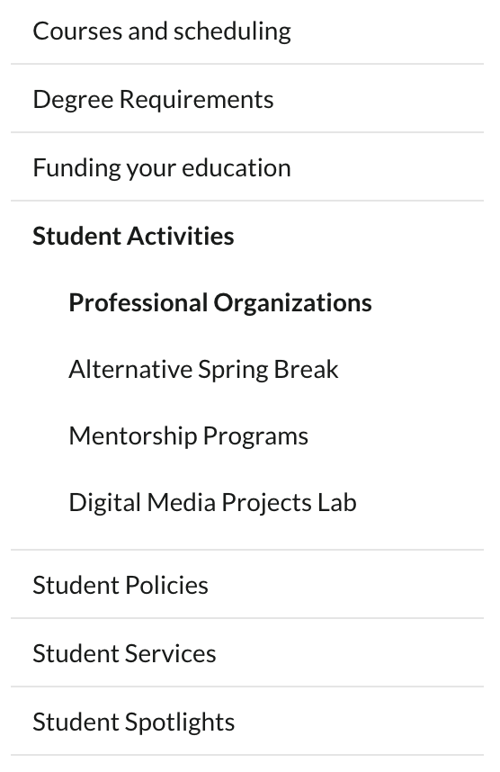
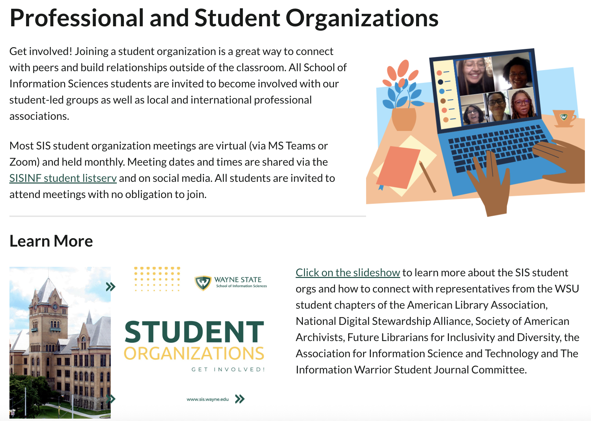
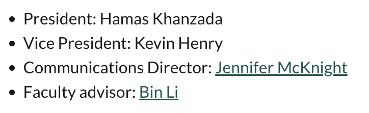
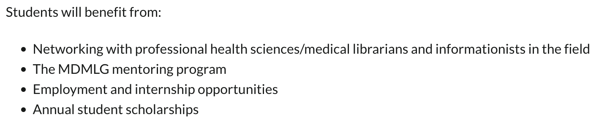
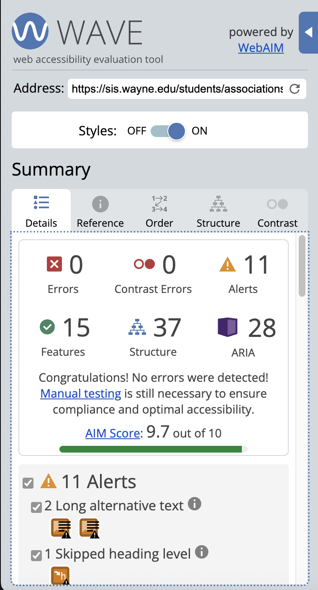
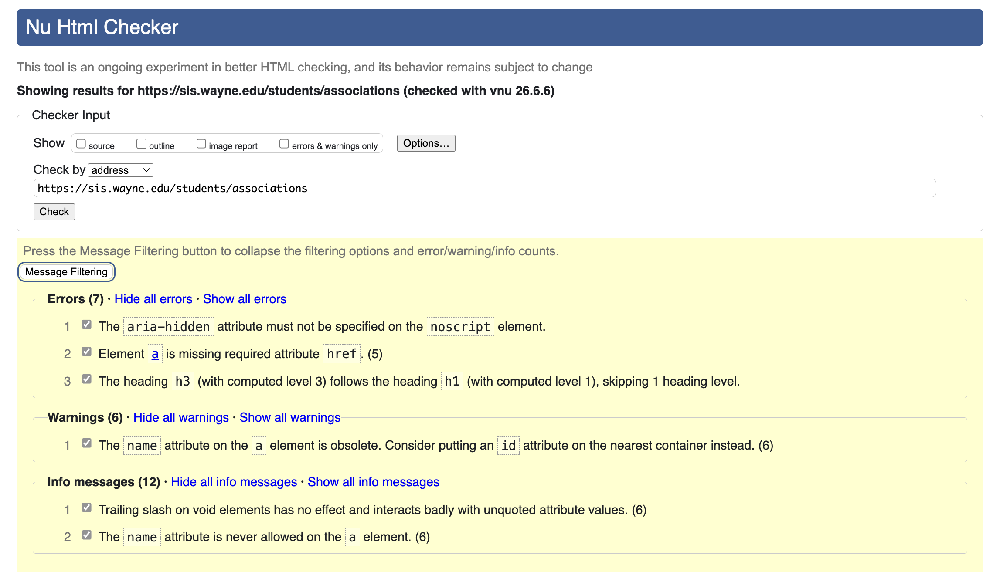

Research Project 2.1
Professional and Student Organizations - http://sis.wayne.edu/students/associations
It took me longer than expected to find a suitable page as it seemed most pages I viewed met 2/3 of the requirements. At quick glance, though, I could identify up to four heading levels, images, and multiple unordered lists. This page had navigational sections in both the header and a bar on the left side of the screen and a generic footer at the bottom of the page.
Major Sections
Site Header

This site header is used consistently across the Wayne State SIS website. This section of the code uses <header> to denote the section which is proper as this flags that this section of the screen will contain information about the site itself. This tag identifies what the section is logically which then helps both the site designer and site reading technology better understand the layout of the site.
Site Navigation

This is the navigational area on the website, leading to the options available after clicking "Students" from the navigational tabs in the header. This section is denoted using <div>, but I would use <nav> to help contextualize this section. Its current formatting gives it the navigational appearance but may not be accessible to screenreaders or search engines.
Primary Content

This main content of this website is denoted using <main> which is also what I would use for this section. It contains the bulk of the page's information and this section tag would give meaning to the information.
Site Footer
There are three sections that look like footers, but I have screenshot the only section that has been coded using <footer>. As it stands, the footer only includes information relaying back to the main Wayne State website. As the footer is intended as a "catch all" that helps the user navigate the space, I believe the footer should be expanded to include the information about SIS's social media and contact information. This section is currently a <div class> but functions more as a <footer>.
Headings
Listed in order of appearance:- Professional and Student Organizations
- Level 1: This is the main title of the page and therefore should have the primary level of heading.
- Learn More
- Level 2: As this is one of the main categories of the "Professional and Student Organizations" page, it is a step down from level 1 and therefore should be a level 2 heading.
- Student Organizations
- Level 2: As student organizations is one of the main categories of "Professional and Student Organizations, it is a step down from level 1.
- American Library Association
- Level 3: This is an example of a student organization, so if "Student Organizations" are a level 2 heading and this is a step down, this should be a level 3 heading.
- Association for Information Science and Technology (ASIS&T)
- Level 3: This is an example of a student organization, so if "Student Organizations" are a level 2 heading and this is a step down, this should be a level 3 heading.
- Future Librarians for Inclusivity and Diversity (FLID)
- Level 3: This is an example of a student organization, so if "Student Organizations" are a level 2 heading and this is a step down, this should be a level 3 heading.
- National Digital Stewardship Association (NDSA)
- Level 3: This is an example of a student organization, so if "Student Organizations" are a level 2 heading and this is a step down, this should be a level 3 heading.
- Society of American Archivists (SAA)
- Level 3: This is an example of a student organization, so if "Student Organizations" are a level 2 heading and this is a step down, this should be a level 3 heading.
- The Information Warrior Student Journal Committee
- Level 3: This is an example of a student organization, so if "Student Organizations" are a level 2 heading and this is a step down, this should be a level 3 heading.
- Other Groups
- Level 2: This item is on the same level as "Student Organizations" as a step down from the website title and therefore should be level 2.
- Metropolitan Detroit Medical Library Group (MDMLG)
- Level 3: This item is an example of an "Other Group," and therefore is a step down from that heading, making it Level 3.
Lists
ASIS&T Leadership

This list consists of the number of the cabinet members in the Association for Information Science and Technology (ASIS&T) organization. It is coded as an unordered list which I believe was partially done for aesthetics of using a bullet over a numbered list. I also think this was chosen to avoid creating a heirarachy, though the list itself is still in order of rank. This list uses a mixture of plain text and links. Plain text is used for the titles of each seat while their names are links to their emails.
MDMLG Student Benefit

This list consists of the benefits student would receive from joining Metropolitan Detroit Medical Library Group (MDMLG). This is an unordered list which makes sense as the list consists of items that are on equal level to one another. It is entirely plain text.
Links
Internal Links
External Links
- American Library Association
- This link does not open in a new tab which I found disappointing. The Student Organization page has additional information about ALA membership at Wayne State that would be useful, but you can miss it when you are redirected to the ALA website.
- All that signifies that this is a link is that the title is underlined and written in green. Users must rely on context clues along to gather that the link will lead them to an external website.
- Wayne State SIS Instagram
- This link, which is at the bottom of the page in what looks like it should be a footer, does open in a new tab. This seems like a wise choice as it keeps students on the SIS website while still encouraging interaction over social media.
- An Instagram icon is used to notate that the user will be taken away from the Wayne State website.
Accessibility

View Accessibility Evaluation results here
This website earned a 9.7/10 for its accessibility. While there are zero errors, this website does have 11 alerts. One major alert is a missed heading, which can impact meaning. Assistive technology and search engines may not be able to properly read this website because of this error. There are also several issues with the display text for links being unclear. The images on this page do have alternative text, and WAVE actually flagged two areas where the alternative text is too long. I think the largest edit the website owner could make, though, is reviewing the links to ensure they are leading to the right location and the display text is accessible to users using screen readers.
HTML Validation

View HTML Validation results here
On five occassions on this page, the element <a> is missing an href. Without an attribute, which is what href would be, the browser does not know where <a> is supposed to direct the user. One piece of code with this issue is <a id="ALA" name="ALA"></a> which appears as though the creator was trying to establish an ID for this section rather than link it to something else. I believe the <a> element needs to be replaced with an element like a <div> tag.
Summary
When viewing the website, the layout appears to make sense. There is an overarching title with several subheadings, but when looking closer at the code, the website's design does not carry the same meaning as the meaning I could visually infer. I realized later on while viewing the validating errors that the body of the website skips from <h1> to <h3>. The only <h2> elements are in the header, so this section breaks the proper structure flow which may distrupt accessibility. This, combined with the sometimes unclear text denoting links, are the largest issues with this page's accessibility. The web designers should look back at the headings, links, and ID elements to create a structure that will convey greater meaning to screenreaders and search engines.